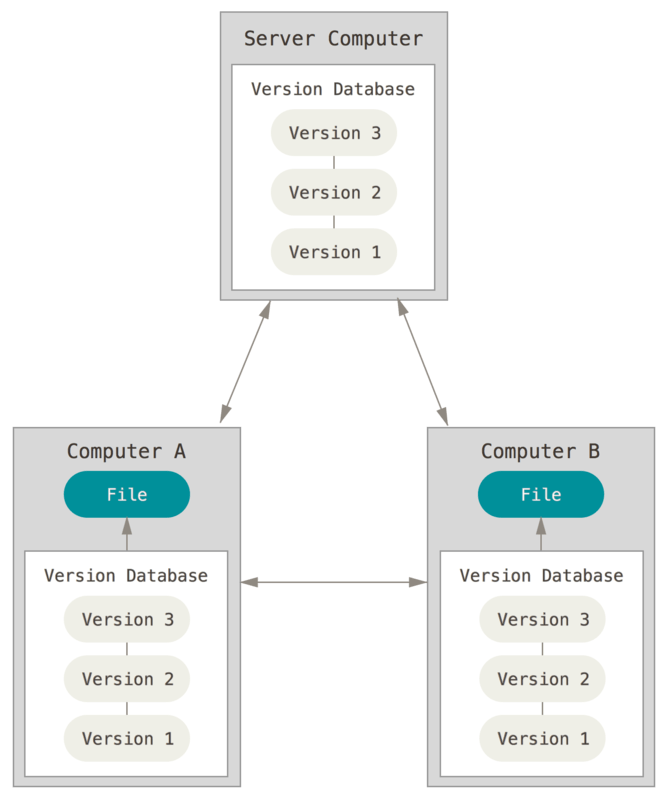
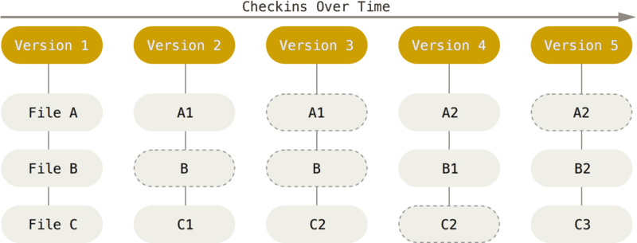
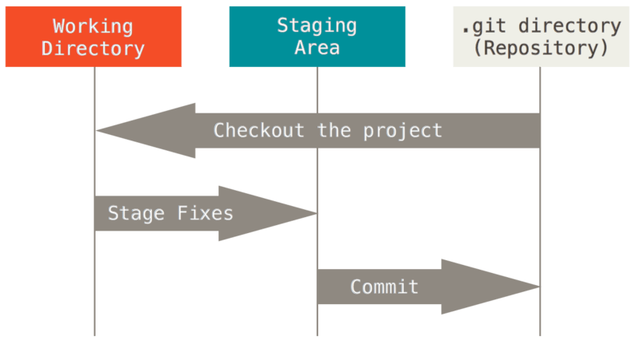
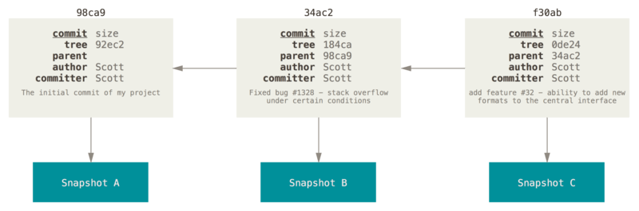
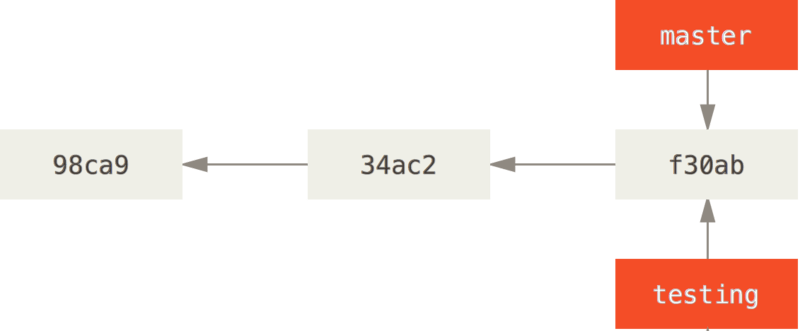
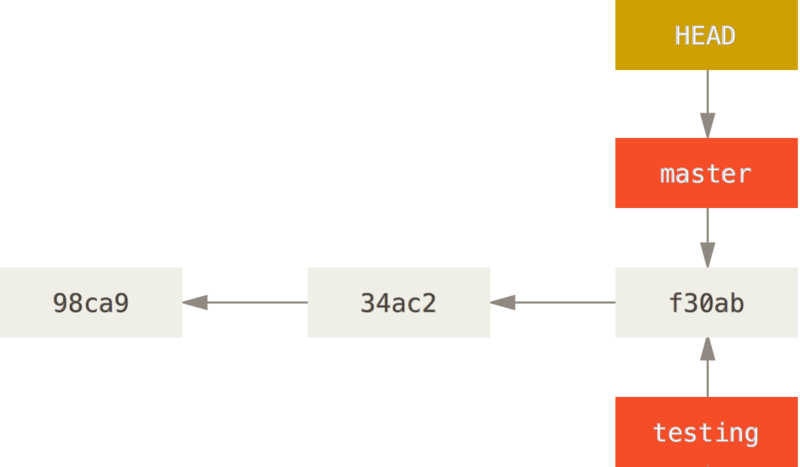
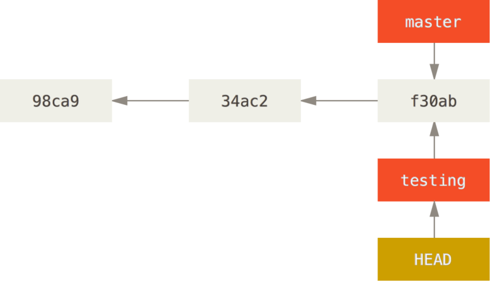
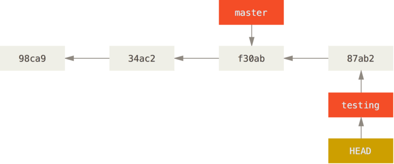
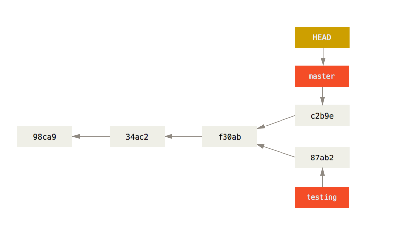

1+12cermak.science/teaching/automation/lectures/01-uvod/presentation.html
. . .
. . .
. . .
V kurzu: Python
. . .
VS Code + Zoo-Code (nejjednodušší, vše se nastaví v GUI)
Ctrl+Shift+X → najít Zoo-Code → InstallOpenAI Compatiblehttps://llm.ai.e-infra.cz/v1coder (nebo agentic)1+122+3*4+1152+3 * 4 +115(2+3)*(4+1)252**1010242**1001267650600228229401496703205376numbers = [12, 34, 56, 78, 90]
total = 0
for num in numbers:
total += num
average = total / len(numbers)
print(f"Průměr: {average}")Průměr: 54.0. . .
average = sum(numbers) / len(numbers)
print(f"Průměr: {average}")Průměr: 54.0. . .
import numpy as np
print(f"Průměr: {np.mean(numbers)}")Průměr: 54.0. . .
“git” can mean anything, depending on your mood.
Zdroj: Původní readme file gitu
Využití pro:
Umožňuje

sudo apt install gitgit help [add/commit/config...]clone a pull
stage, commit, branch


. . .
Pracujeme stylem: modify -> stage -> commit
git config --global user.name "John Rambo"
git config --global user.email john.rambo@matfyz.cuni.czgit config --global core.editor nanogit config --listLokální nastavení je uloženo ve filu .git/config
-m by se otevřel editorgit init
git add test.py
git add .
git commit -m "První commit"git clone url folder| příkaz | |
|---|---|
| git clone url [dir] | zkopíruje vzdálené repo na lokální disk |
| git add [file] | přidá soubor(y) do staging area (tečka přidá vše) |
| git commit | vytvoří snapshot ze souborů ve staging |
| git status | zobrazí stav repozitáře, jaké soubory jsou kde atd. |
| git diff | zobrazí změny v souborech |
| git help | nápověda |
| git pull | stáhne data z remote (fetch) a zkusí je mergnout |
| git push | odešle změny na remote |
další: init, reset, branch, checkout, merge, log, tag, …
git status # zobrazí stav
git diff test.py # zobrazí změny
git checkout -- test.py # vrátí změny k poslednímu commitu
git reset --hard # vrátí vše na poslední commitgit restore --staged test.py # vyndá ze stage, nechá změny
git reset # vyhodí vše ze stage, nechá změny
git reset HEAD test.py # vyhodí ze stage a smaže změny
git stash # uloží stage na jindy (jen lokálně)git branch name # založí novou větev
git branch # vylistuje lokální větve
git checkout [branch] # přepne HEAD na branch
git merge [a] # mergne [a] do aktuální větve. . .

git branch testing
git branch testing
git checkout testing
vim test.py
git commit -a -m 'Změna je život'
git checkout master
vim test.py
git commit -a -m 'Jiná změna'
.gitlab-ci.yml)stages:
- evaluate
check-fruit:
stage: evaluate
before_script:
- apk add jq
script:
- echo "Downloading datafiles"
- wget https://filesamples.com/samples/code/json/sample1.json
- echo "Check available fruits"
- jq -c '.[]' sample1.json | while read i; do echo $i >> output.txt; done
artifacts:
paths:
- output.txt